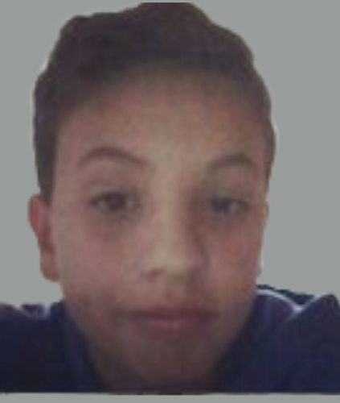

Olá, Sou Gabriel
Explorando uma jornada de aprendizado: onde paixão e dedicação se encontram.

Sobre Mim
Me chamo Gabriel, atualmente, estou imerso no mundo acadêmico, cursando e Análise e Desenvolvimento de Sistemas na Guairacá.
Minha jornada é marcada pela paixão por programação e pela busca constante de conhecimento. Apesar de ainda não ter experiência profissional, estou entusiasmado para aplicar minhas
habilidades em programação."
- Nome: Gabriel Braz Anicheski
- Localização: Inácio Martins, Paraná, Brasil
- Data de Nascimento: 11 de Fevereiro de 2004
Contatos
Perfil Profissional e Habilidades
Objetivo Profissional
Busco uma posição desafiadora no campo de tecnologia, com foco em Bancos de Dados ou Front-End, onde posso aplicar minha paixão pela programação.
Sou uma pessoa apaixonada por aprender e encaro novos desafios com entusiasmo, sem medo de investir tempo e esforço para adquirir novos conhecimentos.
Estou comprometido a fazer todo o necessário para alcançar meus objetivos, demonstrando uma forte determinação e dedicação para atingir o sucesso profissional.
Histórico Profissional
Ainda no início da minha carreira, estou comprometido em aplicar meu conhecimento acadêmico. Embora não tenha experiência profissional anterior, busco ativamente oportunidades de
aprendizado adicional, como frequentemente cursos da Udemy e outras plataformas. Estou entusiasmado para contribuir e crescer neste ambiente profissional.
Habilidades
Habilidades Tecnicas
- Linguagens de Programação: Python, C++, PHP, JavaScript, HTML e CSS.
- Desenvolvimento de Bancos de Dados: SQL.
Habilidades interpessoais
- Trabalho em Equipe: Colaboração eficaz em projetos acadêmicos e de voluntariado.
- Comunicação: Comunicação razoavel oralmente e boa por escrito
- Mentalidade de Aprendizagem: Paixão por aprender e crescer profissionalmente, sem receio de investir tempo e esforço para adquirir novos conhecimentos.
- Adaptabilidade: Capacidade de aprender rapidamente novas tecnologias.